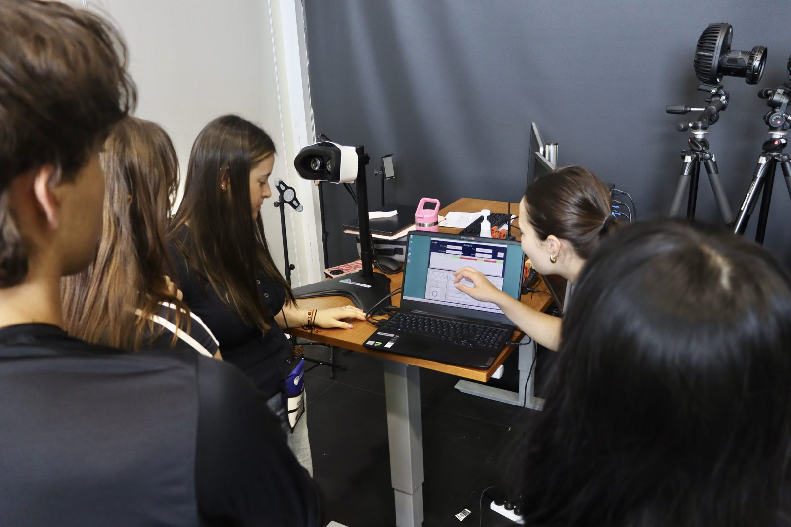

Three days to shape your future STEM career.
The National Youth STEM Summit is a three-day, conference-style event for people aged 18 and over who are studying or starting out in STEM. In 2026, it runs in Canberra from 12 to 14 September, themed “Shaping Your STEM Career.” Expect keynotes from leading scientists, panels, skill-building workshops, and networking with peers and professionals.
People aged 18 and over in tertiary study or training, or in the early stages of their careers. Others are welcome if they feel it would benefit them.
Looking forward: what the future may hold for attendees in their chosen STEM fields.

The skills attendees will need to succeed in their future STEM careers.

The pathways open to attendees, culminating in a Parliamentary Networking Event in the Mural Hall of Australian Parliament House.
Attending the 2025 National Youth STEM Summit was an incredibly rewarding and inspiring experience.
The discussions around real-world impact, especially in energy transition and emerging technologies, were truly inspiring and reinforced my commitment to contributing through research and collaboration.

A jam-packed weekend of inspiring panels and equally fantastic peers. I most certainly would recommend and hope to return in future.


Nine days living on a uni campus, experiencing STEM in the real world.
Explore →
Non-residential STEM experiences a little closer to home, held throughout the year.
Explore →
Step up as a leader and help run NYSF for the next cohort.
Explore →